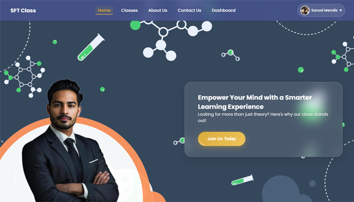
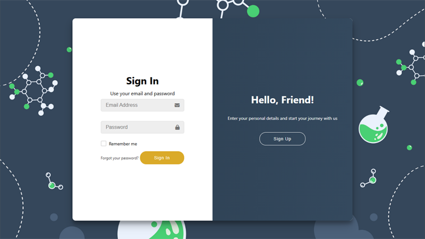
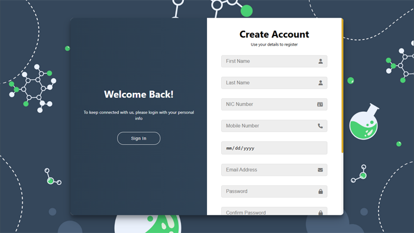

AscendLMS® is a comprehensive, subject-focused Learning Management System specifically engineered for A/L tuition classes in Sri Lanka. This sophisticated web-based platform serves dual purposes as both an academic project under Skill Development Project I (ICT 1108) for the Bachelor of Information and Communication Technology (Honors) degree and a commercial production solution under © FyuXera. Designed to modernize traditional tuition management through affordable, user-centric and scalable digital solutions tailored to local educational requirements.
Platform Overview & User Experience

AscendLMS homepage featuring intuitive navigation and modern interface designThe platform addresses critical challenges faced by A/L tuition teachers and students in Sri Lanka, including attendance tracking, student performance monitoring, centralized study material management and effective teacher-student communication through a localized, purpose-built web application.
Core System Capabilities:
- Comprehensive course scheduling and automated student enrollment management
- Advanced assignment distribution and submission tracking system
- Centralized digital library for study materials and resources
- Intelligent attendance tracking with performance analytics
- Integrated fee payment monitoring and financial management
- Real-time performance analytics and progress reporting
- Multi-channel notification system for announcements and alerts
- AI-powered chatbot for automated student support services
Authentication & Security Framework

Secure sign-in interface with OTP verification
Comprehensive registration system with verification protocolsAdvanced security implementation featuring multi-layer authentication protocols, including secure OTP-based verification systems, role-based access control and comprehensive user management capabilities ensuring data protection and system integrity.
Security & Authentication Features:
- Secure user registration with email verification protocols
- OTP-based authentication system with PHPMailer integration
- Role-based access control (Administrator, Teacher, Student)
- Session management with secure token validation
- Password encryption using industry-standard algorithms
- Account recovery and password reset functionality
Teacher Administration Dashboard
Comprehensive administrative interface designed for educators, providing powerful tools for course management, student assessment and performance analytics with intuitive workflow optimization for efficient classroom administration.
Administrative Capabilities:
- Advanced assignment creation, distribution and grading system
- Digital study material upload and organization management
- Real-time student attendance tracking and analytics dashboard
- Comprehensive fee payment monitoring and financial reporting
- Student performance analytics with detailed progress reports
- Course scheduling and timetable management system
- Automated announcement and notification broadcasting
Student Learning Portal
Intuitive student-centric interface designed to enhance the learning experience through streamlined access to educational resources, assignment management and progress tracking with mobile-responsive design for optimal accessibility.
Student Portal Features:
- Simplified course enrollment and registration management
- Assignment submission and tracking system with deadline notifications
- Centralized access to study materials and digital resources
- Personal schedule viewing and calendar integration
- Real-time announcements and important notice notifications
- Fee payment history and financial status monitoring
- Progress tracking and performance analytics dashboard
- Interactive to-do lists and task management tools
Communication & Support Systems
Advanced communication infrastructure featuring AI-powered chatbot support, multi-channel notification systems and comprehensive user support mechanisms designed to facilitate seamless interaction between educators and students.
Communication Framework:
- Intelligent chatbot with natural language processing capabilities
- Multi-channel notification system (email, in-app, SMS)
- Comprehensive FAQ and help documentation system
- Direct contact and support ticket management
- Real-time announcement broadcasting system
- Interactive user feedback and rating system
Payment Gateway Integration
Sophisticated financial management system featuring prototype payment gateway integration, automated fee calculation and comprehensive financial reporting capabilities designed to streamline tuition fee management and financial operations.
Financial Management Features:
- Prototype payment gateway integration for secure transactions
- Automated fee calculation and invoice generation
- Payment history tracking and receipt management
- Financial reporting and analytics dashboard
- Multiple payment method support and processing
- Automated payment reminder and notification system
Technical Architecture & Development
As Project Manager, Backend Developer, Database Administrator and Scrum Master, I architected and implemented the comprehensive technical infrastructure using vanilla PHP for robust server-side logic, pure JavaScript for dynamic client-side interactions and MySQL for efficient data management. The system incorporates professional libraries including PHPMailer for email services, implementing sophisticated OTP generation and verification systems.
Technical Implementation:
- Vanilla PHP backend architecture
- JavaScript frontend development with responsive design
- MySQL database optimization and administration
- PHPMailer integration for email communication and OTP services
- Custom OTP generation and verification system implementation
- Prototype payment gateway development and integration
- Comprehensive project management using agile methodologies
- Database design and optimization for scalable performance
Project Leadership & Development Excellence
This project represents a comprehensive solution that bridges the gap between traditional educational methods and modern digital learning platforms. Through strategic project management, technical leadership and hands-on development across multiple domains, AscendLMS® delivers a scalable, user-friendly platform specifically tailored for the Sri Lankan education sector.
The system successfully modernizes tuition management processes while maintaining affordability and accessibility, making it an ideal solution for private educators seeking digital transformation. Built with scalability in mind, the platform is designed to accommodate multiple tuition providers across Sri Lanka, representing the future of educational technology in the region.